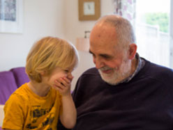

愛/盲/精/選/系/列
-
TOP 10 成人讀物
特別精挑細選，只為了提供給你更好的暢洋書海的服務(多語設定)
-
比爾蓋茲夏季書單
比爾蓋茲表示，儘管近來他幾乎所有的會議與對話，都圍繞在武漢肺炎及如何遏止疫情擴散上，他還是時常被問到都在看些什麼，因此本次除了書單上的5本書外，還加碼介紹更多書籍、影集甚至是遊戲，希望每個人在這個特殊時期，都能找到感興趣的作品。
-

人類與病毒
讓全世界陷入封城隔離、經濟停滯失業飆升的創痛，疫情當前，最大敵人不是病毒，是我們自己，我們擺脫不了病毒的致命威脅，該如何自保？這是一場驚心動魄的對抗戰為什麼洗手可以殺死病毒？